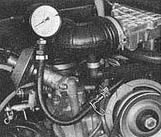

CO value too high
Test condition:
Ignition timing correct
Engine oil temperature between 50 degrees and 70 degrees C (122 degrees and 157 degrees F)
Pressure in ring main too high

Connect pressure gauge
Pull wire off coil terminal 1
Operate starter
Pressure should be 2.5 kg/cm2 (35 psi)
Pressure is correct
Pressure too high